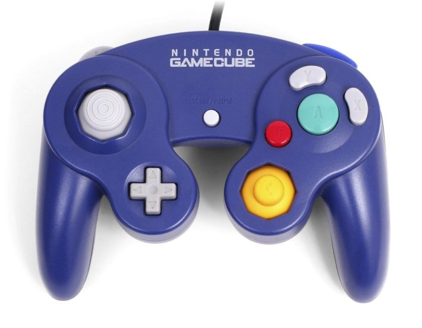

Manettes conseillées
Les Joy-Con fournis avec la Nintendo Switch suffisent pour des parties entre amis. Les joueurs plus avancés leur préfèrent souvent la manette GameCube, branchée avec un adaptateur : c'est la manette historique de la série.

La manette Pro de la Switch est aussi un très bon choix. Certains joueurs utilisent des manettes vraiment inhabituelles, comme un simple Joy-Con tenu à l'horizontale ou des manettes de type « box », où le stick est remplacé par des boutons comme sur une borne d'arcade.
Au final, la meilleure manette est celle avec laquelle vous êtes à l'aise. Pensez aussi à personnaliser vos commandes dans les options, par exemple en réglant le stick droit sur les attaques normales plutôt que sur les attaques Smash.
Techniques
- Le petit saut : appuyez sur deux boutons de saut en même temps pour faire un saut court, idéal pour attaquer en l'air près du sol.
- La chute rapide : appuyez vers le bas pendant que vous retombez pour revenir plus vite au sol.
- La parade : relâchez la garde juste avant qu'une attaque vous touche pour la parer et punir l'adversaire.
- L'influence directionnelle : quand vous êtes éjecté, inclinez le stick pour modifier légèrement votre trajectoire et survivre plus longtemps.
Aides
Certains objets peuvent renverser un combat :
- La Boule Smash : cassez-la pour déclencher le Smash final de votre personnage.
- La Tomate Maxi et le Réceptacle de cœur vous soignent une partie de vos dégâts.
- L'Étoile vous rend invincible pendant quelques secondes.
- Les Poké Balls et les Trophées Aide font apparaître un allié qui attaque vos adversaires.
Pièges à éviter
D'autres peuvent se retourner contre vous :
- Le Bob-omb explose au moindre choc, même entre vos mains.
- Le Champignon empoisonné vous fait rapetisser : vous devenez plus léger et plus facile à éjecter.
- Certaines caisses et capsules explosent quand on les ouvre.
- Une fausse Boule Smash se cache parfois parmi les vraies : en la frappant, c'est elle qui explose.